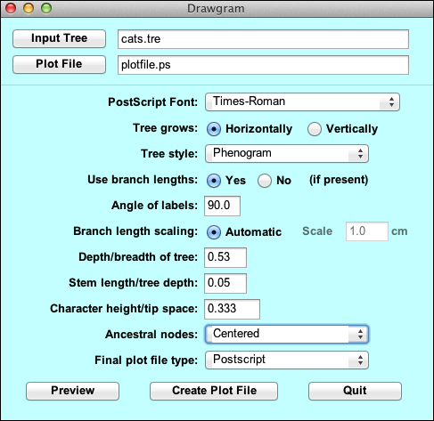
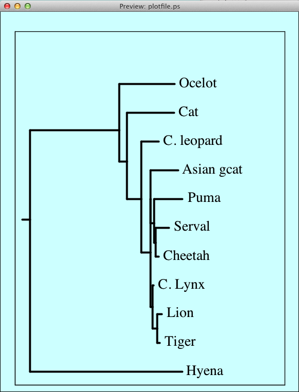

Written by Joseph Felsenstein and James McGill.
© Copyright 1986-2014 by Joseph Felsenstein. All rights reserved.
License terms here.
Drawgram interactively plots a cladogram- or phenogram-like rooted tree diagram, with many options including orientation of tree and branches, style of tree, label sizes and angles, tree depth, margin sizes, stem lengths, and placement of nodes in the tree. Particularly if you can use your computer to preview the plot, you can very effectively adjust the details of the plotting to get just the kind of plot you want.
To understand the working of Drawgram you should first read the Tree Drawing Programs web page in this documentation.
Java Interface
All Phylip programs will get Java interfaces in the 4.0 release. But under some operating systems there are currently serious problems with Drawgram, so it has received its Java interface early as part of the 3.695 bug fix release. We do not anticipate changing this Java interface substantially in the 3.7 release, but don't be surprised if we do.
This new Java interface supersedes the old character-mode menu interface. PHYLIP also contains versions of Drawgram and Drawtree that have the character-mode menu interface. We have kept these available because PHYLIP is used in many places as part of pipelines driven by scripts. Since these scripts do not usually invoke the preview mode of Drawgram, we have disabled the previewing of tree plotting in Drawgram in this release. Previewing is available in the version of Drawgram that has the interactive Java interface.
The Java interface is different from the previous character-mode menu interface; it calls the C code of Drawgram, which is in a dynamic library. Thus, after the previewing is done, the code producing final plot file should make plots that are indistinguishable from those produced by previous versions of Drawgram.
The Java Drawgram Interface is a modern GUI. It will run only on a machine that has a recent version of Oracle Java installed. This is not a serious limitation because Java is freeware that is universally available.
When you start the Drawgram Java interface it looks similar to the following, which has been edited to generate the plot which follows:

It has all the usual GUI funtionality: input and output file selectors, drop down menu options, data entry boxes and toggles. "Preview" brings up a nearly WYSIWYG preview window that displays the Postscript plot created by the current settings (the fonts used in the previewing window are not the same, but use Serif, SansSerif, and Monospaced fonts that approximate the PostScript fonts that are used in the output plot):

Each time you select "Preview" another preview window is generated, so that multiple previews can be visible. This allows you to compare various display options. When the plot has been fine tuned, clicking "Create Plot File" writes the Postscript file that generated the last Preview to the plot file specified. Note that if there are multiple preview windows open, the most recent one is the one that shows how the tree in the final plot file will look, since it will be plotted using the most recent settings.
All the functionality in the Java GUI is the same as in the equivalent menu item in the character-mode menu interface. To ease the transition, we have kept the text in the Java GUI as close as possible to the description in the character-mode menu interface. So, for example, "S" in the old interface, which has the description "Tree style", has the counterpart "Tree style" in the new interface. The detailed explanations of each label are found below.
To understand the working of Drawgram and Drawtree, you should first read the Tree Drawing Programs web page in this documentation.
The Command Line Interface gives the user access to a huge collection of both display systems and output formats (some of them are historical curiosities at this point, but they still work so there is no reason to remove them). It can also be driven by scripting because it is a command line interface. But, as most users have little experience with command line systems, it is a bit daunting.
As with Drawtree, to run Drawgram you need a compiled copy of the program, a font file, and a tree file. The tree file has a default name of intree. The font file has a default name of "fontfile". If there is no file of that name, the program will ask you for the name of a font file (we provide ones that have the names font1 through font6). Once you decide on a favorite one of these, you could make a copy of it and call it fontfile, and it will then be used by default. Note that the program will get confused if the input tree file has the number of trees on the first line of the file, so that number may have to be removed.
Once these choices have been made you will see the central menu of the program, which looks like this:
Rooted tree plotting program version 3.695 Here are the settings: 0 Screen type (IBM PC, ANSI): ANSI P Final plotting device: Postscript printer V Previewing device: X Windows display H Tree grows: Horizontally S Tree style: Phenogram B Use branch lengths: (no branch lengths available) L Angle of labels: 90.0 R Scale of branch length: Automatically rescaled D Depth/Breadth of tree: 0.53 T Stem-length/tree-depth: 0.05 C Character ht / tip space: 0.3333 A Ancestral nodes: Centered F Font: Times-Roman M Horizontal margins: 1.65 cm M Vertical margins: 2.16 cm Y to accept these or type the letter for one to change |
These are the settings that control the appearance of the tree, which has already been read in. You can either accept these as is, in which case you would answer Y to the question and press the Return or Enter key, or you can answer N if you want to change one, or simply type the character corresponding to the one you want to change (if you answer N it will just immediately ask you for that number anyway).
For a first run in the Java interface version, you might accept these default values and see what the result looks like.
You can resize the preview window, though you may have to ask the system to redraw the preview to see it at the new window size.
Once you are finished looking at the preview, you will want to specify whether the program should make the final plot or change some of the settings. The possible settings are listed below.
When you are ready to produce the final plot file, you should use the button "Create Plot File" (if you are using the Java interface) or you should type Y (if you are using the character-mode menu). In the Java-interface version, the name of the plot file has been set in the dialog box near the top of the Java window. It defaults to plotfile.ps. In the character-mode menu, the file name defaults to plotfile.
If there is already a file of that name, the program will ask you whether you want to Overwrite the file, Append to the file, or Quit (in the character-mode menu version it also gives the option of writing to a new file whose name you will be asked to supply.
Below I will describe the options one by one; you may prefer to skip reading this unless you are puzzled about one of them.
In spite of the words "cladogram" and "phenogram", there is no implication of the extent to which you consider these diagrams as being genealogies or phenetic clustering diagrams. The names refer to pictorial style, not your own intended final use for the diagram. The six styles can be described as follows (assuming a vertically growing tree):
You should experiment with these and decide which you want -- it depends very much on the effect you want.
Should interior node positions:
be Intermediate between their immediate descendants,
Weighted average of tip positions
Centered among their ultimate descendants
iNnermost of immediate descendants
or so that tree is V-shaped
(type I, W, C, N or V):
|
The five methods (Intermediate, Weighted, Centered, Innermost, and V-shaped) are different horizontal positionings of the interior nodes. It will be helpful to you to try these out and see which you like best. Intermediate places the node halfway between its immediate descendants (horizontally), Weighted places it closer to that descendant who is closer vertically as well, and Centered centers the node below the horizontal positions of the tips that are descended from that node. You may want to choose that option that prevents lines from crossing each other.
V-shaped is another option, one designed, if there are no branch lengths being used, to yield a v-shaped tree of regular appearance. At the moment it can give somewhat wierd trees; we intend to make it better in the next release. With branch lengths it will not necessarily make the tree perfectly V-shaped. "Innermost" is the most unusual option: it chooses a center for the tree, and always places interior nodes below the innermost of their immediate descendants. This leads to a tree that has vertical lines in the center, like a tree with a trunk.
If the tree you are plotting has a full set of lengths, then when it is read in, the node position option is automatically set to "intermediate", which is the setting with the least likelihood of lines in the tree crossing. If it does not have lengths the option is set to "V-shaped". If you change the option which tells the program whether to try to use the branch lengths, then the node position option will automatically be reset to the appropriate one of these defaults. This may be confusing if you do not realise that it is happening.
I recommend that you try all of these options (particularly if you can preview the trees). It is of particular use to try combinations of the style of tree (option S) with the different methods of placing interior nodes (option A). You will find that a wide variety of effects can be achieved.
AfterwordI would appreciate suggestions for improvements in Drawgram, but please be aware that the source code is already very large and I may not be able to implement all suggestions.